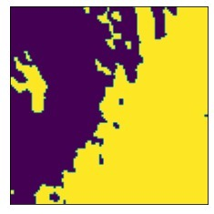
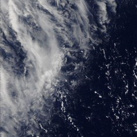
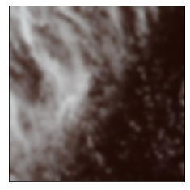

Cherry Bombs CDMX
We developed a machine learning supervised model in order to detect TCBs (transverse cirrus bands), which are irregularly spaced bandlike cirrus clouds that form nearly perpendicular to a jet stream axis, from satelital images. Since TCBs are often found in tropical cyclone outflow regions, our project can help lots of the people that are affected by storms every year by giving more information about cyclones and its path.
Our team, Cherry Bombers, is alway searching for true challenges that solve real life problems. With this idea in mind, we chose Automated Detection of Hazards and, after thinking it over we decided to focus on TCB detection. With a lot an effort and passion, we have created a website using HTML, CSS and JavaScript and we also connected it to a Python coded machine learning model that search TCBs from satelital images. Of course we have problems to achieve our goal, but with a good communication, teamwork and enthusiasm we could get over it, and it was very fun!
TEAM MEMBERS:
A TCBs or Transverse cirrus banding is defined by the American Meteorological Society Glossary of Meteorology (1999) as: Irregularly spaced bandlike cirrus clouds that form nearly perpendicular to a jet stream axis. They are usually visible in the strongest portions of the subtropical jet and can also be seen in tropical cyclone outflow regions.
https://github.com/CarlosLecval/Model-for-TCB-classification
We take the image, reduce the noise of the image by applying a Gaussian blur also resize it to be 100x100px, we turn it to black and white and segment to separate the clouds from the background
Black and White Image
We use a four-layer neural network we have an input layer and another output layer, in addition to two other hidden layers, our first layer has 2 ^ 11 neurons, the second one 2 ^ 10, the third one 2 ^ 9 and the last one only one neuron , for all the layers the activation function is the relu one except for the last one that its function is sigmoid
Segmentation Image
Original Image
Gaussian Blur
